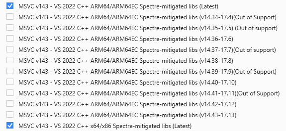
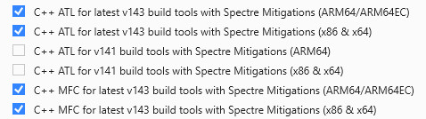

https://learn.microsoft.com/zh-tw/windows-hardware/drivers/download-the-wdk
Intel x86/x64指令集的應用程式或者驅動程式都可以直接在Windows 11(ARM)上面執行，因為Windows會使用模擬方式執行，如果要以原生方式執行，則需要編譯成ARM指令集才可以
1. 安裝Visual Studio 2022
2. 安裝如下套件(26100版本之後才有支援ARM64)

參考資訊：
https://learn.microsoft.com/zh-tw/windows-hardware/drivers/download-the-wdk
Intel x86/x64指令集的應用程式或者驅動程式都可以直接在Windows 11(ARM)上面執行，因為Windows會使用模擬方式執行，如果要以原生方式執行，則需要編譯成ARM指令集才可以
1. 安裝Visual Studio 2022
2. 安裝如下套件(26100版本之後才有支援ARM64)

